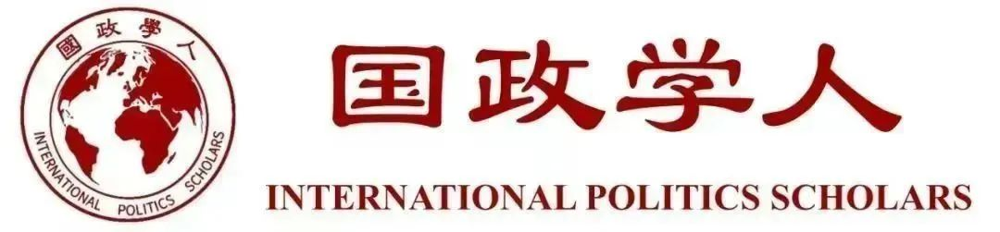

收录于合集

作品简介
【作者】 陈思诚（See Seng Tan），新加坡南洋理工大学国际关系学院教授，拉惹勒南国际研究院（RSIS）国防与战略研究所（IDSS）副所长、研究主席，主要研究领域是东盟问题、地区安全、美国“印太战略”。
【编译】 刘颖哲（国政学人编译员，对外经济贸易大学国际关系学院）
【校对】 吕紫烟
【审核】 戴 赟
【排版】 赵怡雯
【来源】 See Seng Tan, Consigned to Hedge: Southeast Aisa and America’s ‘Free and Open Indo-Pacific’ Strategy, International Affairs, 96 (1) , 2020, pp.131-148.

期刊简介
《国际事务》(International Affairs)，是世界领先的国际关系期刊之一，也是少数几本涵盖整个学科的期刊之一。成立时间已超过90年，以学术严谨、注重实践而闻名。近五年影响因子为3.176, 2020年为4.010。
**对冲：东南亚与美国“自由开放的印太”战略 ******
Consigned to Hedge: Southeast Aisa and
America’s ‘Free and Open Indo-Pacific’ Strategy
陈思诚
See Seng Tan
内容提要
东盟（ASEAN）及其成员国如何回应美国与其他域外大国设想和推动的“自由开放的印度太平洋”构想（Free and Open Indo- Pacific, FOIP）？东南亚（或东盟）国家如何保持东盟在该地区安全架构中所宣称的“中心地位”（centrality）？ 本文认为，东盟国家迄今表现出的微妙反应暗含其一贯而持久的承诺——战略上的不结盟（strategic non- alignment）和对冲（hedging）。 尽管如此，东南亚对冲的能力已被美国强硬的对华立场所削弱，面对选边站的压力，东盟国家可能会有选择地与中国和美国合作，而不是完全站在其中一方。在这种背景下，研究美国和其他地区大国在其各自的“印太战略”中如何考虑东盟的区域中心地位有较大意义。
本文的目的是考察东南亚国家和东盟作为一个整体如何对美国不断发展的“印太战略”做出反应和间接重塑。 尽管大国是区域秩序的关键缔造者，但区域对权力的反应能够并已经在区域秩序建设中发挥重要作用，这在东南亚最为明显。对于一个由小国和（或）弱国组成的集团来说，东盟不仅在东南亚，而且在更广泛的东亚地区秩序的塑造过程中都享有显著的影响力。 随着可能持续的中美对抗形势，以及特朗普政府对多边外交的负面态度，在东盟主导的地区安排中，两个主要大国之间日益增强的制度平衡已经威胁到东盟维持印太多边主义合作的能力。作为回应，东盟分别加强与中美的双边务实合作。借此，东盟力求通过一种非正式的方式，重新定义自己在大国纷争时代的区域中心地位，以及对多边主义带来的潜在负面影响。在国家和地区层面，东南亚国家可能会坚持对冲战略，并在面临越来越大的压力时避免偏袒任何一方。
文章导读
01 ****
**全部关乎中国？
**
All about China?
倡议国虽然在基于规则的秩序、航行自由、尊重主权、开放市场等方面具有共同偏好，但对“自由开放的印太”的定义却仍然相对模糊，这主要是因为四方安全对话（Quad）的国家（美日澳印）对印太的看法和所采取的战略不同。 迄今为止，只有美国和澳大利亚曾经定期在公开场合共同提及四方安全对话和“印太战略”，即便如此，澳大利亚仍担心其经济日益依赖中国，认为有必要将四方安全对话和“印太战略”的聚焦领域多元化，而不仅仅是专注于防务。日本拒绝将“印太战略”与四方安全对话挂钩，并强调“印太战略”的经济维度。同样，有人认为澳大利亚应该效仿日本和印度，为该地区提供替代中国“一带一路”倡议（BRI）的经济选择。印度总理莫迪在2018年的香格里拉对话（Shangri- La Dialogue, SLD）中大谈印太，却完全未提四方安全对话。 尽管存在细微差别，但澳大利亚、印度和日本似乎都致力于将印太视为一个包容性地区，这与特朗普政府的排他性做法形成了鲜明对比。
尽管许多印太国家可能认同美国对中国行为的担忧，但不一定支持特朗普政府对待中国的方式。美国挑起意识形态的对抗有可能引发毫无意义的冷战，而亚洲需要的是一种以稳定的力量平衡和相互妥协为基础的、更具建设性的解决方式。 特朗普的“印太战略”在某方面类似于奥巴马的战略转向（重返亚太），因为二者都建立在对盟友、伙伴、朋友的框架的需要和对他们重新承诺的基础上，若没有这一基础做支撑，美国平衡中国的努力不可能成功。
02
**难以改变的对冲者
**
Incorrigible hedgers
东南亚对美国的做法作何反应？从历史上看，东盟成员国的外交政策行为是对冲和转移（hedging and shifting）的混合，但归根到底是有限的结盟。 即使在当前激烈竞争的环境下，与大国接触变得不再那么模棱两可，这些结盟仍然受限，因为东南亚国家还没有准备好与任何一个大国携手共进。他们的合作迹象可能由一种外部力量转移到另一种，但只是较小程度上的。
可以说，虽然东南亚国家普遍对中国存在焦虑，并认为需要以某种方式管理中国日益增强的实力和影响力，但他们对“印太战略”的意义和重要性的认识仍然模糊。总体来说， 他们对“印太战略”有所犹豫，且大多数国家采取了“等着瞧”（wait and see），甚至是怀疑论的态度。尽管东南亚国家在很大程度上具有共同的整体行为模式，但他们公开分享观点的意愿却不尽相同。迄今为止，只有少数国家公开表达了对“印太战略”和（或）他们认为东盟应对此概念采取何种立场的看法。 印度尼西亚自2013年以来一直是印太概念的主要发声者，在美国介入之前就曾提出了一项友好合作条约，但东盟其他成员国对此反应冷淡。在2017年特朗普于亚太经合组织峰会发表讲话后，现任印尼总统佐科·维多多（Joko Widodo）领导下的政府重新燃起了对印度- 太平洋构想的兴趣，新的重点是将印尼重塑为一个海上强国。与美国的“印太战略”相比，印尼印太构想的不同之处在于其包含了东亚峰会的所有成员国，但这一提议并没有得到东南亚各国政府的肯定。
马来西亚和越南等其他东盟国家对“印太战略”仍持矛盾态度，因为他们对“印太战略”可能与四方安全对话合并持保留意见。马来西亚的行为是有限结盟转变的一种混合反映，服务于其长期的对冲战略。马来西亚重新校准了等距离原则（equidistance），从默默支持中国转化为实际中立，深化与包括中美在内的所有地区大国的接触，巩固东盟的中心地位，并加强东盟主导的多边主义。而越南即使可能支持美国的“印太战略”，也会“低调行事”。越南可能会继续深化与主要大国的战略合作，尤其是与四方安全对话成员的合作，以巩固其在该地区的安全并提升与中国谈判的地位。
事实上，“印太战略”中许多明确的原则对东盟成员国具有吸引力，如航行自由、法治、尊重主权、开放市场等。然而，由于担心东盟的中心地位可能受到损害，他们不愿全力支持这一概念。 因此，尽管新加坡与美国有着密切的安全联系，他还是表示不愿意加入“印太战略”集团。新加坡认为围绕这一战略的三个关键问题仍然没有答案：印太是否保持了东盟的中心地位；它是否促进贸易、投资、基础设施和互联互通；它是否支持基于国际法下的世界秩序。此外，新加坡总理警告，不要为了处理中国的崛起而组建任何不良的“竞争集团”；四方安全对话可以演变成“开放包容的地区架构”的一部分。这种表态反映了新加坡一贯的倾向：对冲和避免偏袒任何一方。实质上，东盟国家基本上是在寻求一些保证，即四方安全对话成员国的“印太战略”不会危及东盟目前享有的区域中心地位。
03 ****
**获得东南亚的认可
**
Getting south-east Asia’s ‘buy-in’
至关重要的是，“印太战略”能否成功获得东南亚国家的支持，很可能取决于特朗普对贸易的不满程度。 为美国实现“更公平的贸易”是特朗普“印太战略”的重点之一。除新加坡外，其他九个东南亚经济体都存在对美贸易顺差。特朗普已将“重新平衡”这些贸易顺差作为自己的使命，并可能寻求通过双边协议实现这一目标。如果美国对东南亚挑起贸易战，越南（中美贸易战的最大赢家）有可能是最大的受害者，印度尼西亚和菲律宾则紧随其后。
另一方面，特朗普愿意避免将民主和人权引入其与东盟国家的互动中，这可能（或已经）有助于缓和与该地区的关系。 相比之下，在奥巴马政府的亚太再平衡战略期间，美国与几个主要盟友和伙伴的关系显著降温，部分原因是奥巴马政府对2014年泰国军事政变、马来西亚高层腐败曝光、菲律宾私刑处决吸毒者事件上的回应。
简单来说，将“印太战略”简化为“只针对中国”的问题，甚至简化为“遏制中国”的战略，都不太可能获得所有东南亚国家的全力支持。 为了使平衡战略发挥作用，美国需要说服东南亚内外的国家认识到中国崛起的负面影响，并动员他们合作应对。美国必须做出并坚守承诺，维持甚至增加美国在该地区的海军力量，为增强东盟成员国的海军和海岸警卫队力量提供资金。特朗普政府似乎确实在朝着这个方向前进。但他面临的不仅是让东南亚国家参与进来的挑战，还有“印太战略”缺乏明确性和共识的问题。除此之外，还要在四方安全对话中与其他成员国就对华战略达成一致。
04
**在“印太战略”中为东盟定位
**
Locating ASEAN in the FOIP
东盟面临的最大挑战很可能是这样的事实，即在大国竞争日益加剧的情况下，“印太战略”与“一带一路”倡议的出现必然会开创双边主义的新时代。
**这给东盟的中心地位带来了根本性的挑战，因为东盟中心地位的基础正是其与对话伙伴国在冷战后建立的亚洲多边体系。
**
另一方面，由于持续的中美竞争显然将对东盟在多边合作中的中心地位构成严峻挑战，有迹象表明，一些东盟成员国试图以更适合该地区发展的方式重新定义和解释东盟的中心地位。 这一点在2018年东盟寻求区域安全合作时的表现最为明显，东盟和中国利用“东盟+1”的形式，在广东省湛江市沿海举行了一次联合海上演习。 东盟有能力在海上安全问题上与中美分别展开合作，这表明其已经重新掌握了区域主动权，尤其是在海上安全合作方面。 这些努力反映了东盟的观念，即由东盟成员国组成的东盟国防部长会议（ADMM）和东盟防长扩大会（ADMM- Plus）是该地区安全架构的重要组成部分——汇集了所有重要的区域利益攸关方，并为他们提供了一个对话与合作的开放而包容的平台。
此外，东盟努力以具体方式展示其与主要大国的关系，而不是仅仅依靠口头声明。 这也反映了在中美不断施加压力，要求东盟成员国在中美战略竞争中选择立场时，东盟仍坚持对冲和不结盟的承诺。
05
**结论
**
Conclusion
本文试图评估东南亚国家对“印太战略”的反应与间接重塑。特朗普强硬的对华立场以两种相互关联的方式对东南亚构成挑战。首先，这可能会促使东南亚国家在中美对抗日益加深的情况下选边站。第二，东盟在区域架构中的中心地位长期以来以大国共识与合作为基础，但现在正面临严峻风险。另一方面，华盛顿需要确保东南亚对“印太战略”的支持，这意味着该地区将从中国和美国（以及为各自的“印太战略”寻求区域支持的四方安全对话成员国）的争取和拉拢中获益。然而，这种收益可能是短期的，因为面对中美之间的长期对抗，该地区可能会遭受损失。尽管包括美国在内的四方安全对话国家似乎已准备好承认东盟的中心地位，但东盟是否能够轻松融入“印太战略”仍然有诸多复杂的影响因素。
东盟正试图通过证明其对主要大国的效用及意义来重新定义自己的中心地位。 特朗普政府的“印太战略”似乎是一个完全为了平衡中国的清晰的战略构想。但是美国实施这一战略的能力尚且未知，尤其是因为这一战略的能否成功取决于美国是否有能力建立并维持一个广泛的联盟，以作为对中国实力和影响力的制衡。美国使用的强硬辞令与其对东南亚外交政策的复杂特点之间存在明显的不协调。随着美国继续与其盟友和伙伴（包括东盟国家）合作应对中国，“印太战略”有可能发展成为相互协商的过程。为了应对这些不确定性，东南亚国家尽管在行为上有细微差别，但已表现出对大国采取对冲措施的一贯倾向。
译后记
本文主要分析东南亚国家对美国“印太战略”的反应。作者提出东南亚国家大多对“印太战略”持模糊态度，坚持对冲型大国平衡战略。从体系层面看，中美竞争为未来权力格局的变化带来不确定性，由小国组成的东盟出于自保的考虑以对冲战略平衡风险；从区域角度看，“印太战略”可能冲击东盟在东南亚地区的中心地位，但是大国在不同领域的领导权有限，东盟试图通过对冲巩固多边合作框架。
特朗普政府的“印太战略”重视与盟友和伙伴的合作，但四方安全对话成员国在印太问题上缺乏共识，“印太战略”在定义上依然存在模糊性。对东南亚国家来说，他们支持特朗普不将民主、人权等置于互动的主要位置，又担心美国在经贸问题上的制裁，更无法承受与主要大国长期对抗的风险，因此东盟不会全力支持以遏制中国为核心的“印太战略”，而是与继续深化与主要大国的接触，倡导以东盟为中心、以东亚区域合作关系网络为主体的印太概念。
参考文献
[1] Kuik Chen-Chwee, How Do Weaker States Hedge? Unpacking ASEAN States’ Alignment Behavior toward China , Journal of Contemporary China, Vol.25, No. 100, 2016, pp.159-185.
[2] 韩志立.关系网络的竞争:“印太”战略对东盟中心地位的挑战——以关系主义身份理论为视角[J].外交评论(外交学院学报),2019,36(02):87-108.
本文由国政学人独家编译推荐文章观点不代表本平台观点
**** 添加 “ 国小政” 微信，获取最新资讯 ****
**
**

好好学习，天天“在看”
国政学人
支持学术公益与知识传播
微信扫一扫赞赏作者 __赞赏
已喜欢，对作者说句悄悄话
取消 __
发送给作者
发送
最多40字，当前共字
上一页 1/3 下一页
长按二维码向我转账
支持学术公益与知识传播
受苹果公司新规定影响，微信 iOS 版的赞赏功能被关闭，可通过二维码转账支持公众号。